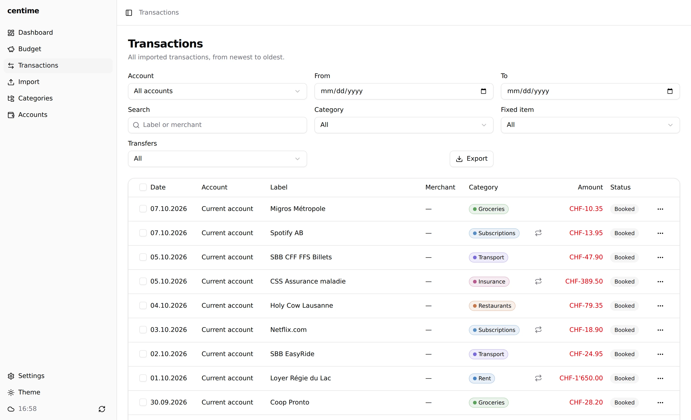
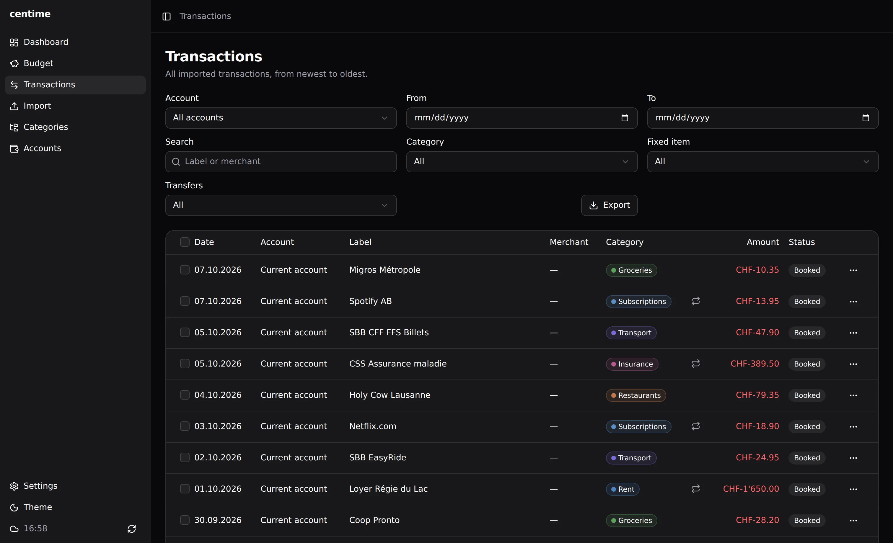

Importing transactions
Centime imports bank statements from files. Nothing is fetched from your bank.
Supported formats
- CSV using configurable provider profiles, so the columns of your bank's export can be mapped once and reused.
- camt.053 (XML), the ISO 20022 account statement format offered by many European banks.
Duplicates and pending transactions
Importing overlapping periods is safe: duplicates are detected, and pending transactions are updated when the booked version arrives.


Adding a transaction by hand
Cash, a reimbursement between friends, anything no statement carries: New transaction on the Transactions page records it with its account, date, label, merchant, amount and category. An Expense / Income toggle gives the sign, so the amount is typed without one (a comma or a dot works as decimal separator). The entry counts in the dashboard and the budgets like an imported one, and a later import of the same operation is detected as a duplicate.
Exporting
The Transactions page exports to CSV (; separator, UTF-8 with BOM, so Excel opens it correctly). The export follows the filters currently applied on the page. On Android, the file is saved in the app's Download folder.

